Dan Reither.
Cybersecurity practitioner.
I built CyberPro Hub to help cybersecurity practitioners cut through the noise with curated news, expert voices, podcasts, tools, and Philadelphia-area community resources.
Credentials CCISO · CISM · CISSP · CEH · GCIH
Daily Intel Board
Find your signal
Search across the directory or narrow it to a category.
Search the full directory.
This Week’s Picks
A rotating set of trusted briefings, with new picks each week.
Renowned News Sources
High-signal outlets that serious practitioners actually read. Skip the vendor fluff.
Krebs on Security
Brian Krebs — the gold standard for investigative cybercrime journalism. Deep dives into breaches, ransomware ecosystems, and underground forums.
Visit →The Hacker News
Fast, widely-read daily coverage of threats, zero-days, malware, and major incidents. High volume, solid technical detail.
Visit →BleepingComputer
Excellent incident reports, ransomware tracking, malware analysis, and practical remediation guidance.
Visit →Dark Reading
Enterprise-focused security news, threat research, and analysis trusted by professionals.
Visit →The Record
Recorded Future’s news arm. Frequently first on breaking threat and policy stories.
Visit →SecurityWeek
Industry and enterprise security news, threat actor activity, and ICS/OT coverage.
Visit →CyberScoop
Strong on government, policy, and federal cybersecurity developments.
Visit →Schneier on Security
Bruce Schneier — strategic thinking, cryptography, privacy, and security policy.
Visit →Ars Technica Security
In-depth reporting on vulnerabilities, breaches, privacy, and the technology behind today’s security stories.
Visit →Infosecurity Magazine
Global cybersecurity news, analysis, webinars, and research for security professionals.
Visit →CSO Online
Security leadership, risk management, incident response, and CISO-focused reporting.
Visit →Help Net Security
Daily coverage of security incidents, research, and practitioner resources.
Visit →Security Boulevard
Security news and analysis aggregated from industry publications and community contributors.
Visit →Cyber Defense Magazine
Digital magazine and newsletters covering defensive security, research, and industry trends.
Visit →HIPAA Journal
Healthcare data breach reporting, privacy coverage, and HIPAA compliance guidance.
Visit →SC Media
Security operations, risk, policy, and leadership reporting for enterprise practitioners.
Visit →Malwarebytes Labs
Threat research, malware analysis, and practical security-awareness reporting.
Visit →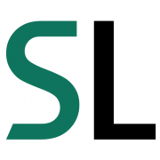
Securelist
Kaspersky threat research and malware analysis. U.S. restrictions apply to some Kaspersky products and services; verify current rules and organizational policy before use.
Visit →CrowdStrike Blog
Adversary intelligence, incident analysis, and defensive insights from CrowdStrike researchers.
Visit →Cyware Cybersecurity News
Curated cybersecurity news and threat updates for security teams.
Visit →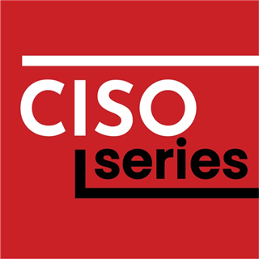
CISO Series: Cybersecurity Headlines
Daily cybersecurity headlines and leadership-focused context from the CISO Series.
Read & listen →Threat Intel Feeds & Daily Briefs
RSS-ready sources and high-value newsletters that deliver signal over noise.
Essential Feeds & Aggregators
- CISA KEV CatalogAuthoritative known-exploited vulnerabilities. Non-negotiable for prioritization.
- NVD (NIST)National Vulnerability Database — the technical record.
- Pwn WatchCurrent vulnerability intelligence with affected products, exploitability context, patch status, and mitigation guidance. Use it to prioritize fixes and confirm details with vendor advisories.
-
MITRE ATT&CKAdversary tactics, techniques, and procedures knowledge base.
- AlienVault OTXOpen Threat Exchange — community threat intelligence.
- Unit 42 (Palo Alto)High-quality campaign and malware research.
- Malware-Traffic-Analysis.netPCAPs and practical analysis of real-world malware infections.
- Ransomware.liveTracks ransomware-group activity and public leak-site claims; treat listings as unverified allegations.
- CVE TrendsCommunity-driven view of vulnerabilities receiving attention; not a substitute for CISA KEV or vendor advisories.
- Shodan BlogInternet-exposure research and updates from the Shodan team.
-
Microsoft Security Response CenterMicrosoft security updates, vulnerability guidance, and response information.
- Active CountermeasuresThreat-hunting research and open-source defensive tools.
Newsletters & Research Briefs
- Risky Business / Risky BulletinPatrick Gray — opinionated, practitioner-focused roundups. Essential.
- tl;dr secClint Gibler — weekly AppSec & cloud security curation. Excellent signal.
- TLDR InfoSecDaily five-minute habit. Clean and efficient.
- SANS NewsBitesSemiweekly executive-friendly headlines.
-
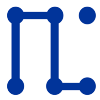
Unsupervised LearningDaniel Miessler — cybersecurity + AI + strategy intersections. - CISA Alerts & AdvisoriesOfficial U.S. government cybersecurity alerts.
- Cisco TalosThreat research, vulnerability disclosures, and IOCs.
-
-
Google Cloud Threat Intelligence (Mandiant)APT and campaign analysis from Mandiant researchers.
- SANS Internet Storm CenterDaily threat diaries, handler analysis, and internet activity monitoring.
- Varonis BlogData security research, threat analysis, and breach coverage.
Seasoned Experts & Researchers
People who consistently produce high-value insight, research, or analysis.
Brian Krebs
Investigative Journalist
Deep cybercrime investigations. KrebsOnSecurity is required reading.
Troy Hunt
Have I Been Pwned
Breach transparency, web security education, and practical advice.
Bruce Schneier
Cryptographer & Author
Security thinking, privacy, policy, and long-term strategic perspective.
Graham Cluley
Security Writer & Podcaster
Clear analysis, Smashing Security co-host, long-time industry voice.
Mikko Hyppönen
Chief Research Officer, WithSecure
Malware research, surveillance, and global threat perspective.
Kevin Beaumont
Threat Researcher
Sharp vulnerability and threat commentary. High signal.
Rachel Tobac
Social Engineer & CEO
Social engineering, human risk, and practical security awareness.
Daniel Miessler
Unsupervised Learning
Cybersecurity + AI + culture. Thoughtful long-form analysis.
Best Podcasts for Practitioners
Available on Pocket Casts, Apple Podcasts, Spotify, and most major apps. These are the ones that consistently deliver value.
Darknet Diaries
Narrative true stories from the dark side of the internet. Exceptional storytelling that also teaches.
Listen →Risky Business
The most-cited weekly briefing among working professionals. Sharp, no-nonsense industry analysis.
Listen →CyberWire Daily
Fast, reliable weekday news and analysis. Ideal for staying current without drowning.
Listen →Security Now
Deep technical discussions on vulnerabilities, protocols, and privacy. Long-running classic.
Listen →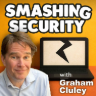
Smashing Security
Witty, accessible take on serious security stories. Great balance of insight and personality.
Listen →CISO Series
Leadership, board communication, risk, and the practical realities of running security programs.
Listen →ISC StormCast
Quick daily summary of network security events. Perfect for the commute or morning brief.
Listen →Defensive Security Podcast
Reviews high-profile breaches and extracts practical lessons for defenders.
Listen →Security Weekly
Security news, expert interviews, and practitioner-focused conversations from SC Media.
Listen →Cybersecurity Headlines
A concise daily briefing on cybersecurity news, incidents, and industry developments.
Listen →Malicious Life
Story-driven accounts of cybercrime, malware, and the people and incidents that shaped security.
Listen →Click Here
Reported stories about cyber threats, technology, and how digital events affect people and organizations.
Listen →💡 Pocket Casts tip: Search any of these titles directly in Pocket Casts. Most have official feeds. You can also import OPML collections of security RSS feeds from community repositories for a complete threat-intel listening + reading stack.
Security Voices to Follow
High-signal accounts for research, threat intelligence, vulnerability analysis, and useful commentary. Cross-network links are included where profiles could be verified.
Also consider curated lists such as Florian Roth’s (@cyb3rops) high-signal Cyber list for a ready-made timeline of quality accounts.
Best Subreddits
Where practitioners actually talk. Quality varies — stick to the well-moderated technical ones.
r/netsec
Highest-quality technical security research, vulnerability analysis, and exploit discussion. Strict moderation.
Join →r/cybersecurity
Broad professional community: news, careers, tools, and industry discussion.
Join →r/AskNetsec
Practical Q&A from experienced practitioners. Excellent for specific technical problems.
Join →r/blueteamsec
Detection engineering, threat hunting, IR, and defensive security focus.
Join →r/Malware
Malware analysis, reverse engineering, and threat research discussions.
Join →r/hacking
Broader ethical hacking, CTFs, and learning resources. More beginner-friendly volume.
Join →Tools, Frameworks & References
Foundational resources every seasoned practitioner keeps bookmarked.
-
- CISAU.S. Cybersecurity & Infrastructure Security Agency
- National Vulnerability DatabaseCVE details and scoring
- OWASPApplication security standards and projects
- Have I Been PwnedBreach notification service by Troy Hunt
- SANS InstituteTraining, certifications, and research
- FIRSTForum of Incident Response and Security Teams
-
 Awesome Security (GitHub)Community-maintained list of security tools and resources; review project activity and each tool before adoption.
Awesome Security (GitHub)Community-maintained list of security tools and resources; review project activity and each tool before adoption.
- VirusTotalFile and URL analysis
-
 urlscan.ioURL and website scanning / investigation
urlscan.ioURL and website scanning / investigation
-
Security Standards & Frameworks
-
- OWASP AI ExchangeCommunity-maintained guidance for securing AI systems.
- Center for Internet SecurityCIS Controls, Benchmarks, and MS-ISAC resources.
- HITRUSTSecurity and privacy assurance framework used across regulated industries.
Government Advisories & Risk Frameworks
- CISA StopRansomwareRansomware prevention, response guidance, and joint advisories.
- CISA Resources & ToolsPublic cybersecurity guidance and practical tools from CISA.
- CISA No-Cost Services & ToolsFree services that help organizations assess and improve security.
-
NIST Cybersecurity FrameworkRisk-management outcomes and guidance for cybersecurity programs.
-
- NVD Vulnerability APIsProgrammatic access to National Vulnerability Database data.
- FIRST EPSSEstimate the likelihood that a published vulnerability will be exploited.
- CIS Critical Security ControlsPrioritized safeguards for reducing common cybersecurity risks.
- CIS DownloadsOfficial downloads for CIS Benchmarks, Controls, and related resources.
-
- NICE Workforce FrameworkCommon language for cybersecurity work roles, tasks, knowledge, and skills.
-
FDA Medical Device CybersecurityCybersecurity guidance and regulatory resources for medical devices.
-
NSA: Mitigating Active Directory CompromisesJoint hardening guidance for detecting and reducing Active Directory compromise risk.
Threat Intelligence, IOC & Malware Analysis
Privacy: Services such as VirusTotal, Shodan, and public malware sandboxes may retain searches or share submitted samples. Never upload confidential, proprietary, patient, or regulated data; check each service's terms before analysis.
- VirusTotal Threat ProfilesDocumentation for managing and organizing threat profiles.
- Cisco Talos Reputation CenterCheck reputation information for IP addresses, domains, and files.
- ThreatFox IOC DatabaseCommunity-shared indicators of compromise for threat research.
- URLhausTrack URLs used to distribute malware.
-
PhishTankCommunity phishing reports; service access and registration may vary. Verify indicators with independent sources.
- Palo Alto Networks URL Filtering TestCheck how Palo Alto Networks categorizes a URL.
- dnstwist Phishing Domain ScannerFind lookalike domains that may be used for phishing or brand impersonation.
-
dnstwist on GitHubOpen-source domain permutation and phishing-domain discovery tool.
- Check Point Live Cyber Threat MapVisual overview of observed threat activity; use for awareness, not as a complete threat picture.
-
- ANY.RUN Interactive Malware SandboxInteractive analysis of suspicious files and URLs. Do not submit sensitive samples.
- Joe Sandbox CloudAutomated malware and URL analysis; check sharing settings before submitting.
- Hybrid AnalysisCommunity malware analysis; review sample visibility and privacy terms.
- Jotti Malware ScanMulti-engine file scanning. Never upload confidential or regulated files.
-
Malware Unicorn: Reverse Engineering 101Hands-on introductory reverse-engineering workshop materials.
- Packet Storm SecuritySecurity advisories, tools, and vulnerability-related research; test tools responsibly.
-
CAPE Sandbox (CAPEv2)Actively maintained Cuckoo-derived malware-analysis platform; isolate samples and review safe-handling guidance before use.
Incident Response & SOC Operations
- Public Incident Response PlaybooksCommunity-maintained playbooks and references for common incident scenarios.
- SANS Information Security Policy TemplatesPolicy templates and guidance for common security program needs.
- Incident Response Plan Guide & TemplatePractical overview and planning template for preparing for incidents.
-
-
-
-
Microsoft Sentinel on GitHubCommunity detections, analytics, automation, and other Sentinel content.
- Windows Security Log EncyclopediaReference for Windows Security event IDs and their meanings.
- Purple KnightAssess Active Directory security posture in environments you are authorized to test.
- Cisco Security & TheHive ProjectInformation about TheHive incident-response platform and Cisco integrations.
Cloud, Identity & AI Security
-
-
-
-
-
Security Copilot Phishing WorkflowExample workflow for a reported-phishing triage scenario.
-
- SANS Cloud Security EssentialsPaid foundational training for cloud security practitioners.
- SANS Public Cloud SecurityPaid advanced security training for AWS, Azure, and Google Cloud.
- AI Security & Governance CertificationAI governance and privacy/security certification details; review recognition and cost before enrolling.
Certifications & Professional Communities
Career, Community & Events
-
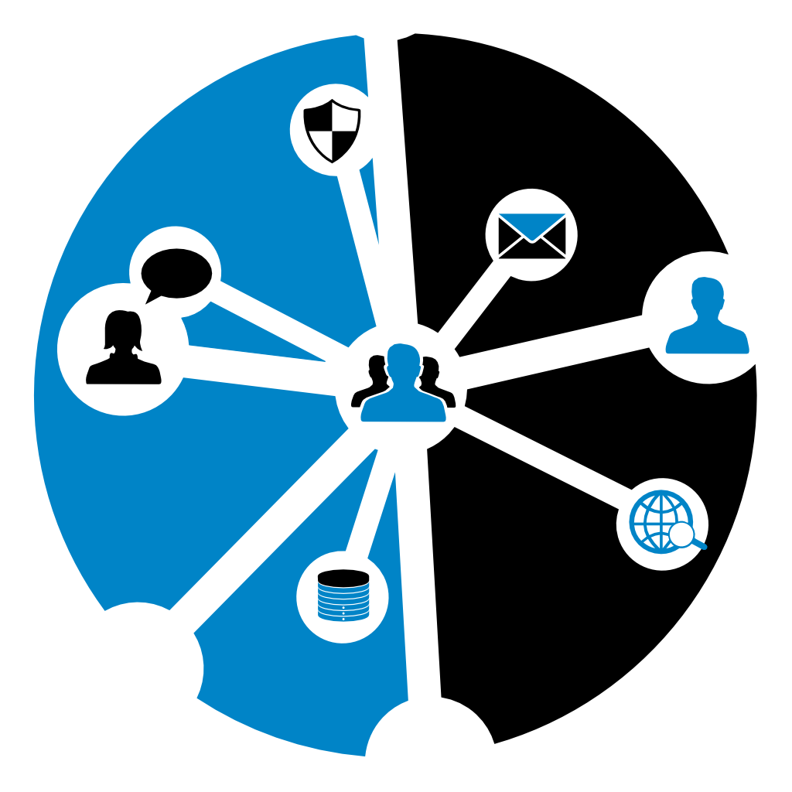
Cyber Social HubCommunity for digital investigators and cybersecurity professionals. - CyberSeekCybersecurity career pathways, workforce data, and regional job-market insights.
- CyberSeek Supply & Demand Heat MapExplore cybersecurity workforce supply and demand by location.
-
NJCCIC Membership & CommunityRegional cyber-threat intelligence, information sharing, and community resources.
- Health Sector Coordinating CouncilHealthcare cybersecurity working groups, resources, and collaboration.
-
-
- Pennsylvania Cybersecurity ConferencesEvent directory for Pennsylvania; verify dates and details with organizers.
- CyberScoop EventsCybersecurity policy and industry event listings.
- Antisyphon Incident Response SummitIncident-response training and event information; check for current or future sessions.
Learning & Training
- PortSwigger Web Security AcademyFree interactive web application security lessons and labs.
- HacksplainingInteractive lessons explaining common web vulnerabilities.
- Kali LinuxLinux distribution for authorized penetration testing and security auditing.
- Pentester AcademyHands-on courses in penetration testing, forensics, and red teaming.
- SANS Reverse Engineering MalwareAdvanced malware reverse-engineering and analysis training; paid course.
-
 Cisco Skills for AllFree introductory networking and cybersecurity courses.
Cisco Skills for AllFree introductory networking and cybersecurity courses.
- BugcrowdBug bounty platform and resources for security researchers.
- KnowBe4Security awareness training and phishing education resources.
- Ultimate Windows SecurityWindows security and event-log references by Randy Franklin Smith.
- GIAC Reverse Engineering Malware (GREM)Certification details for malware reverse engineering.
-
Infosec Institute ResourcesCybersecurity training and certification-preparation content.
- National Cyber LeagueCybersecurity competitions and practice for students and professionals.
Tools & Lookups
- Cisco Talos IntelligenceThreat research, reputation lookups, and vulnerability information.
- ShodanSearch engine for internet-connected devices and exposed services.
- CyberChefBrowser-based recipes for decoding, parsing, and transforming data.
- MXToolboxDNS, MX, blacklist, and email delivery diagnostics.
- HackerTargetOnline network discovery and diagnostic tools; use only on authorized targets.
-
 Qualys SSL LabsAnalyze the TLS configuration of a server you are authorized to assess.
Qualys SSL LabsAnalyze the TLS configuration of a server you are authorized to assess.
- CheckTLSTest email transport encryption and mail-server TLS configuration.
- DMARC AnalyzerTools and guidance for SPF, DKIM, and DMARC deployments.
- IPinfoIP address, ASN, geolocation, and network intelligence.
- IPQualityScoreIP reputation, proxy, and fraud-risk checks.
- WazuhOpen-source security platform for SIEM, endpoint monitoring, and XDR.
- NessusVulnerability assessment software from Tenable.
- SIFT WorkstationFree SANS toolkit for digital forensics and incident response.
- KitPloitDirectory of open-source security and penetration-testing tools; verify tools before use.
Cybersecurity Groups Near Philly
Meet local practitioners, share knowledge, and find chapter events across Greater Philadelphia and the Delaware Valley.
 Certifications
Certifications
ISC2 Philadelphia
Connect with local security professionals and explore chapter learning, networking, and certification-community events.
Find a chapter →ISACA Philadelphia
Local community for information systems audit, risk, governance, assurance, and cybersecurity professionals.
Visit the chapter →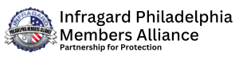
Public-PrivateInfraGard Philadelphia
FBI-led public-private partnership connecting vetted members who help protect critical infrastructure.
Learn about membership →OWASP Philadelphia
Open community for builders and defenders interested in web application security, learning, and local meetups.
Visit the chapter →ISSA Delaware Valley
Regional information security association serving Southeastern Pennsylvania and the wider Delaware Valley.
Meet the community →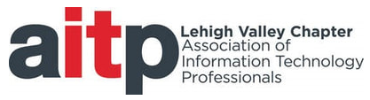
Lehigh ValleyLehigh Valley AITP
Connect with Lehigh Valley information technology professionals through the local AITP chapter.
Visit the chapter →ISC2 New Jersey Chapter
Regional ISC2 chapter serving New Jersey security professionals through community and member events.
Visit the chapter →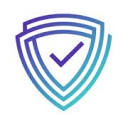
Regional CommunityGreater Philadelphia Regional Security Collaborative
Regional collaboration for security practitioners and organizations across Greater Philadelphia.
Visit the collaborative →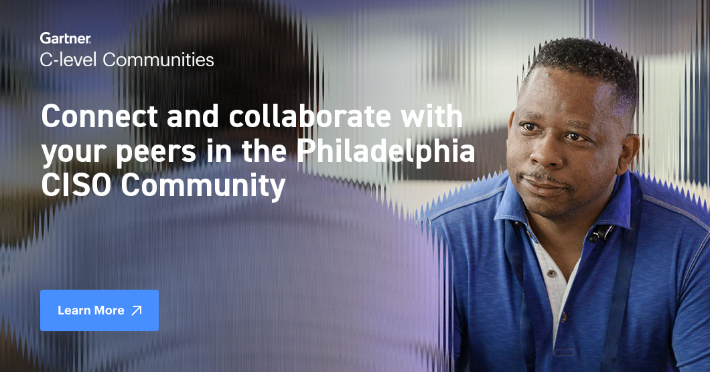
CISO Peer NetworkEvanta Philadelphia CISO Community
Peer network for Philadelphia-area CISOs to exchange perspectives on security leadership and emerging challenges.
Explore the community →CISOMeet Philadelphia
Local CISO community focused on collaboration, peer learning, and connecting security leaders.
Meet the community →PhillyCISO
Member-led chapter bringing senior information security executives together through leadership programs and peer connections.
Visit PhillyCISO →Health-ISAC
Member-driven health-sector community for sharing cyber and physical threat intelligence and strengthening resilience.
Explore membership and resources →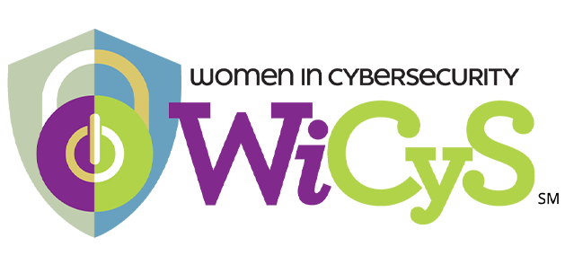
Professional CommunityWomen in Cybersecurity (WiCyS)
Professional and student community offering mentorship, development programs, events, and networking; includes a Delaware Valley affiliate.
Explore WiCyS →Cybersecurity Conferences Around Philadelphia
Keep an eye on these community and industry event calendars for upcoming dates in Philly and the surrounding region.
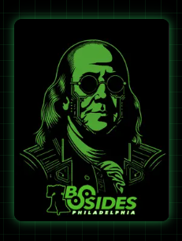
Community-ledBSides Philly
Volunteer-organized information security conference built by and for the local security community.
See the next conference →SecureWorld
Practitioner-focused regional security conferences; check the official calendar for Philadelphia-area dates.
Browse event calendar →FutureCon
City-based cybersecurity conferences featuring practitioner talks, panels, and vendor showcases; check for Philly dates.
View upcoming events →GPSEC & GuidePoint Events
Look for GPSEC and GuidePoint Security gatherings, including Philadelphia-area cyber technology showcases.
Explore GuidePoint Security →Techno Security & Digital Forensics Conference
Conference for digital forensics, investigations, and cybersecurity professionals; check the organizer's calendar for dates and locations.
View the conference →CISO Executive Network: Philadelphia Roundtable
Philadelphia discussion series on making security operations more effective and aligned with business needs; check the page for current event details.
View roundtable details →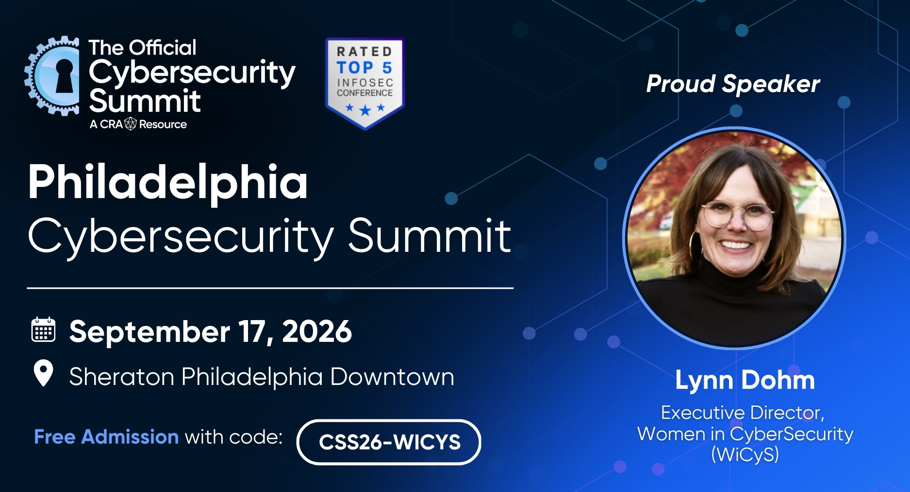
Community EventWiCyS Delaware Valley at the Philadelphia Summit
Event details for the WiCyS Delaware Valley affiliate's participation in the Philadelphia Official Cybersecurity Summit.
View WiCyS event details →Official Cybersecurity Summit — Philadelphia
Philadelphia edition of the executive-focused cybersecurity summit; check the event page for current program and registration information.
View the Philadelphia summit →The Official Cybersecurity Summit
Organizer's main site with event information and editions in Philadelphia and other cities.
Browse the summit series →Event locations and schedules change from year to year. Confirm dates, venues, and registration details with each organizer before making plans.
Build your own signal stack
Subscribe to 3–5 high-quality newsletters, follow a tight list of expert accounts, listen to 1–2 weekly podcasts, and keep CISA KEV + MITRE ATT&CK in your daily workflow. Quality over quantity wins.
Explore the Career Launchpad for role maps, hands-on labs, frameworks, and open-source projects, or visit Signal Boost to meet community contributor Jonathan (Jon) Taylor, CISSP, CCSP.
This site is a curated starting point for practitioners. Links point to external resources; always verify information independently and follow responsible disclosure practices.